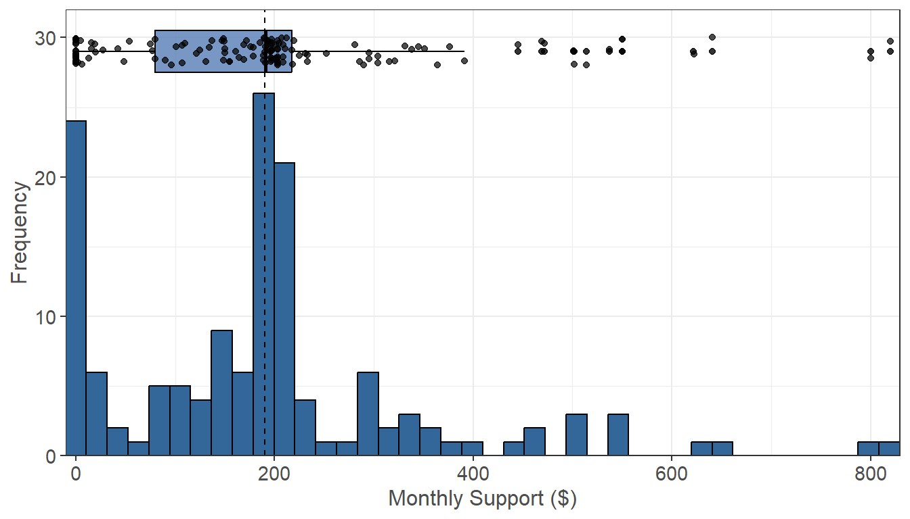
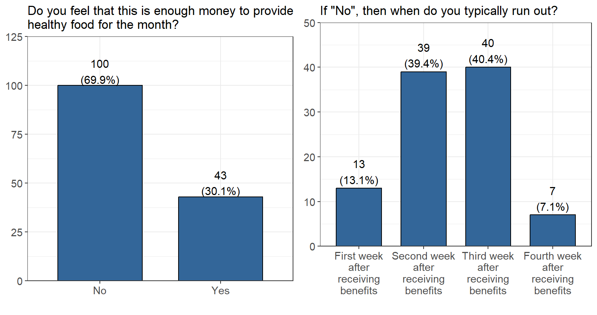
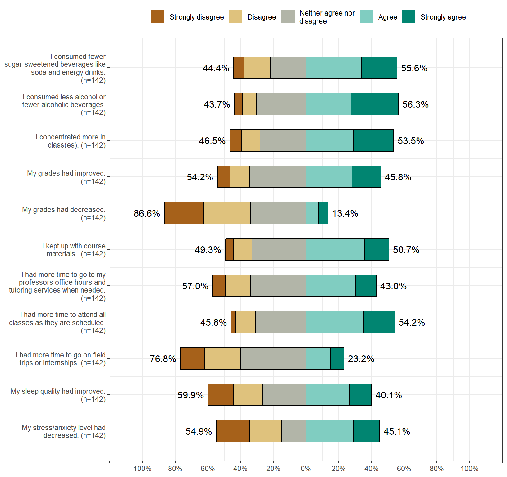
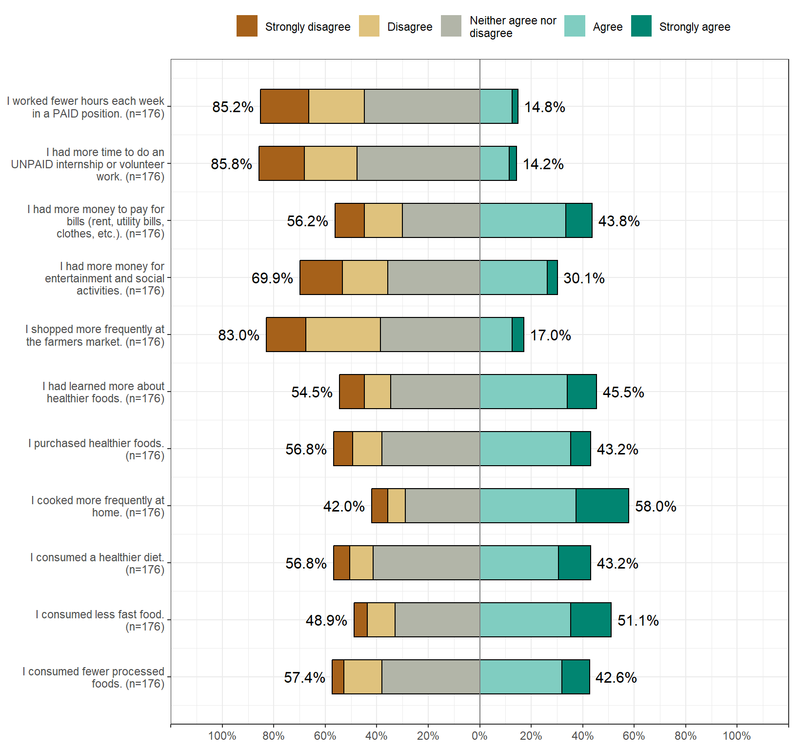
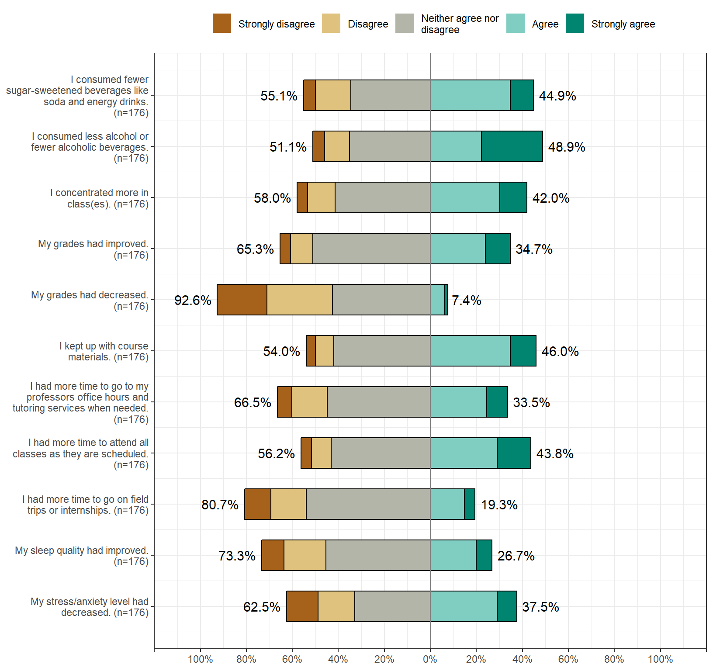
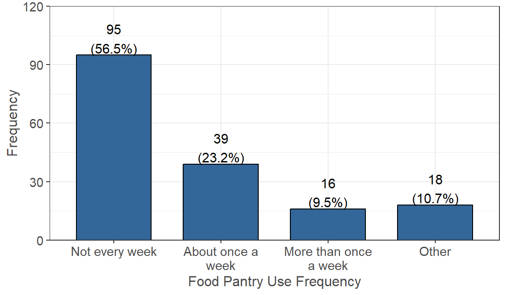
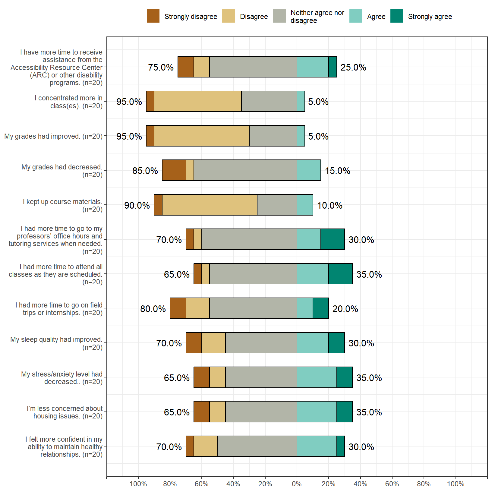
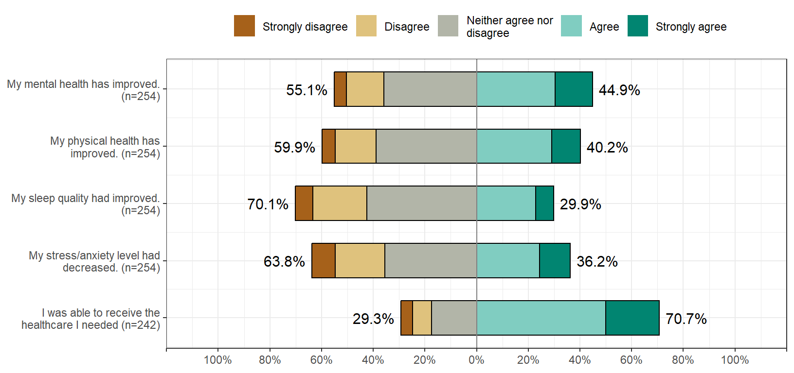
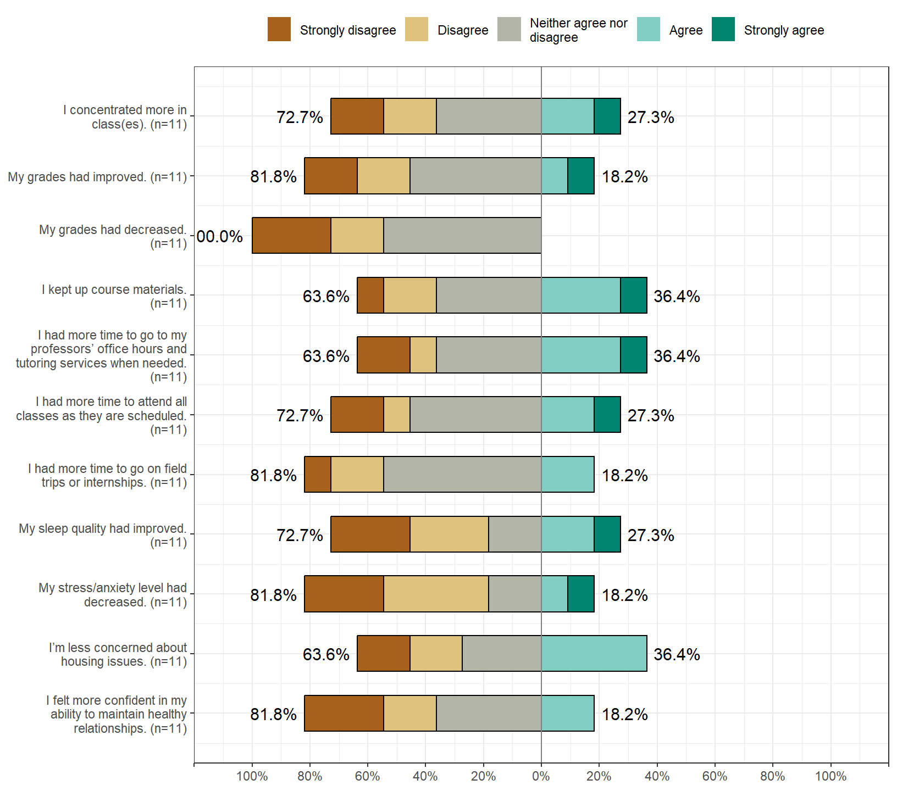

Basic Needs Programs and Services
The following questions were asked in regards to the participation and impact of Basic Needs programs and services on students lives. Students were asked to evaluate how they feel these programs have benefited them both academically and non-academically, as well as barriers/reasons in regards to why they are not using certain programs. This includes programs such as CalFresh, Food Pantries, Meal Programs, Medi-Cal (also known as Medi-Cade in the United States), and Emergency Housing Services.
Participation
Pick all Basic Needs Programs and Services that you participate in (mark all that apply): Figure 6.1: Participation in Basic Needs Programs
Impact
CalFresh EBT
Note: for the first graph on EBT application we have (n=138, 34% of 402 reporting). And for the second graph on how many people are fed we have (n=123, 31% of 402 reporting). Figure 6.2: CalFresh EBT: Application & Feeding
Looking at the above graphs, the majority of people apply for CalFresh EBT as an individual (101 people) while only 37 people applied with other people in their household. Similarly, the majority of people claimed only 1 person is fed through the EBT card (64 people). 29 people claim to feed 2 people through the EBT card, and only a small amount of people claim to feed 5 or more people through the EBT card.
Monthly CalFresh Money
How much money do you receive from CalFresh each month? (n=138, 34% of 402 reporting).  Figure 6.3: Monthly Allowance from CalFresh
The average amount of money received per household using CalFresh (denoted by the dotted line) is $185.5, while the median is $191. The values range from $0 to $820. The majority of households who do receive these benefits seems to be getting around $250 or less per month.
Household Size Breakdown
Below is a breakdown of the average monthly allowance received from CalFresh based on household size.| Household Size | Household Average | Per Person Average |
|---|---|---|
| 1 | $149.31 | $149.31 |
| 2 | $177.38 | $ 88.69 |
| 3 | $222.70 | $ 74.23 |
| 4 | $289.09 | $ 72.27 |
| 5 | $391.00 | $ 78.20 |
| 6 | $462.00 | $ 77.00 |
| 7 | $355.50 | $ 50.79 |
| 8 | $418.00 | $ 52.25 |
| $ 80.34 |
Table 6.1: CalFresh by Household Size
Looking at the above table, the general pattern seems to be that as household size increases so does the monthly average assistance from CalFresh. The household average was divided by the household size to find the “per person average” for CalFresh assistance. From taking the average of these values, we can see that a person on CalFresh receives an average monthly assistance of $ 80.34.
Is This Enough?
Note: for the first graph on if the allowance is enough we have (n=138, 34% of 402 reporting). And for the second graph on when people run out we have (n=96, 24% of 402 reporting).  Figure 6.4: Enough Monthly Allowance and Time of Exhaustion
Of the people who do receive money from CalFresh, 41 of them claim that it is enough money to provide healthy food for a month and 97 of them feel that it is not enough. People who do not feel it is enough money typically run out of CalFresh money in either the second week (38 people) or third week (38 people). A small group also run out within the first week, while an even smaller minority run out in the fourth week.
CalFresh Benefits
While you received CalFresh benefits:  Figure 6.5: Perceived Benefits of CalFresh
CalFresh Barriers
What are the reasons you do not have CalFresh or have never used CalFresh? (Select all that apply).| Measure | Yes (%) |
|---|---|
| I do not think I’m eligible | 64 (36.4%) |
| I feel other students need CalFresh more than I do. | 41 (23.3%) |
| I don’t need CalFresh. | 29 (16.5%) |
| No time to complete the application/ application is too long. | 24 (13.6%) |
| The application is too difficult. | 21 (11.9%) |
| No time to get verification documents or don’t know how to get verification document. | 19 (10.8%) |
| Other | 18 (10.2%) |
| My family or household does not want to apply for CalFresh. | 12 (6.8%) |
| I am embarrassed or ashamed to apply for CalFresh. | 8 (4.5%) |
| No time to call or go to the local social service office for my CalFresh interview. | 7 (4.0%) |
| I have heard from other students that it’s not worth my time because I won’t be eligible or I won’t receive much money. | 6 (3.4%) |
| The staff in my local county social service office were not helpful or supportive during my application process. | 5 (2.8%) |
| No transportation | 4 (2.3%) |
| The CalFresh outreach team on campus was not helpful or supportive during my application process. | 3 (1.7%) |
| I don’t believe in social services like CalFresh, WIC, or Welfare | 1 (0.6%) |
Campus Food Pantry
For the following questions, please choose how much you agree or disagree with the impact campus food pantries has or had on your life. While I utilized campus food pantry/pantries:  Figure 6.6: Perceived Impact of Campus Food Pantry
Food Pantry Use
How often do you normally use the food pantry or if you are not currently using it, how often did you use it? (n=165, 41% of 402 reporting).  Figure 6.7: Food Pantry Use Frequency
When people use the food pantry, the majority do not use it every week (93 people). 39 people claim to use it about once a week, 15 people use it more than once a week, and 18 people claim other uses.
Reasons Not Using Food Pantries
What are the reasons for you to not go to campus food pantries? (Select all that apply).| Measure | Yes (%) |
|---|---|
| I feel other students need the food more than I do. | 120 (38.0%) |
| Inconvenient to access due to lack of transportation or out-of-the way location. | 91 (28.8%) |
| Inconvenient times of operation/limited pantry hours. | 67 (21.2%) |
| I am embarrassed or scared to go to the campus food pantries or local food banks. | 41 (13.0%) |
| Other | 29 (9.2%) |
| I am not aware of any campus food pantries or local food banks. | 23 (7.3%) |
| There are no food pantries close to campus or my residence | 13 (4.1%) |
| My family doesn’t want me to go to campus food pantries or local food banks. | 4 (1.3%) |
| I do not believe in using campus food pantries or local food banks. | 0 (0.0%) |
Restaurant Meal Program (RMP)
While you participated in the Restaurant Meal Program (RMP):  Figure 6.8: Perceived Impact of Restaurant Meal Program (RMP)
Reasons For Not Using RMP
What are the reasons for you to not have RMP or have never used RMP? (Select all that apply).| Measure | Yes (%) |
|---|---|
| I have never heard about this Restaurant Meal Program (RMP). | 207 (67.0%) |
| I don’t need this Restaurant Meal Program (RMP). | 68 (22.0%) |
| I have no access to these participating restaurants/no convenient locations. | 27 (8.7%) |
| I have no time to go to these restaurants. | 19 (6.1%) |
| Other | 15 (4.9%) |
| I do not like the food offered in these participating restaurants. | 2 (0.6%) |
| I have no transporation to these restaurants. | 0 (0.0%) |
| I am emberarrassed or ashamed to use my EBT card in a restaurant. | 0 (0.0%) |
| I don’t believe in social services like RMP, Medi-Cal, CalFresh, WIC, or Welfare/Cash Aid. | 0 (0.0%) |
Medi-Cal
Knowing that you have Medi-Cal:  Figure 6.9: Perceived Impact of Medi-Cal
Reasons Not Using Medi-Cal
What are the reasons you do not have Medi-Cal or have never used Medi-Cal? (Select all that apply).| Measure | Yes (%) |
|---|---|
| I do not think I am eligible for MediCal. | 20 (37.7%) |
| I don’t need MediCal. | 14 (26.4%) |
| I do not know what MediCal is or I think I already have health insurance. | 11 (20.8%) |
| Other | 7 (13.2%) |
| The MediCal application is too difficult to complete. | 6 (11.3%) |
| No time to complete the MediCal application/MediCal application is too long. | 2 (3.8%) |
| I have heard from other students that it is not worth my time because I wont be eligible. | 2 (3.8%) |
| I am embarrassed or ashamed to apply for MediCal. | 2 (3.8%) |
| I only need medical services at the student health center associated with my campus. | 1 (1.9%) |
| My family or household does not want me to apply for MediCal. | 1 (1.9%) |
| I don’t believe in social services like MediCal, CalFresh, WIC, or Welfare/Cash Aid. | 0 (0.0%) |
Emergency Housing Services (EHS)
While you received Emergency Housing Services:  Figure 6.10: Perceived Impact of Emergency Housing Services (EHS)
Reasons Not Using EHS
What are the reasons you do not have Emergency Housing Services or have never used Emergency Housing Services?| Measure | Yes (%) |
|---|---|
| I don’t need Emergency Housing Services | 198 (61.3%) |
| I was not aware that my campus had Emergency Housing Services like grants and housing placements in an emergency. | 128 (39.6%) |
| I am embarrassed or ashamed to apply for Emergency Housing Services. | 9 (2.8%) |
| Other | 9 (2.8%) |
| No time to complete the Emergency Housing application or contact the Emergency Housing Staff. | 6 (1.9%) |
| The Emergency Housing Services application is too difficult to complete. | 5 (1.5%) |
| The emergency housing grant/money is not enough to support what I need, so not worth my time to apply for it. | 4 (1.2%) |
| I do not believe in social services like Emergency Housing Services, MediCal, CalFresh, or Welfare/Cash Aid. | 0 (0.0%) |